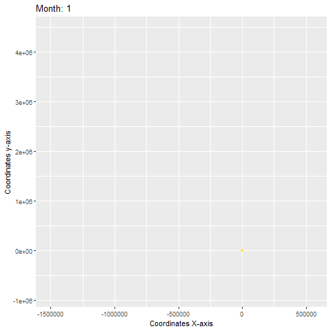

About me
I am a rising fourth-year Statistics student at the Pennsylvania State University. I am minoring in Economics, Mathematics and Piano Performance. Seeking on continuing my education at a graduate level.
Even though I was raised by lawyers, I was always inclined for sports, data and numbers. I grew up in Colombia and love soccer naturally. Graduated from high school in Bogota D.C. (Colombia), and Pawtucket (Rhode Island). Can speak Spanish, English and French. I am a huge New England teams' fan, dog enthusiast and obsessed with data analysis.
What am I currently doing?
I am currently doing research through The Ronald E. Mcnair Post-Baccalaureate Achievement Program about geo-spatial statistics with migratory data from birds using Bayesian Methods under Dr. Ephraim Hanks mentorship at Penn State University.
What projects have I worked on?
Archetype Analysis of golden eagle migration patterns
Used existing methods to conduct an archetype analysis of monthly golden eagle location data. Developed a new approach to archetype analysis. Fitted the new approach using Bayesian methods and Markov Chain Monte Carlo. Wrote up the results.

Time Series Analysis
Analyzed two different financial investments using Generalized AutoRegressive Conditional Heteroskedasticity (GARCH) models
Data Fest Projects
Competed in ASA DataFest™ at Penn State in 2021 and 2022. Achieved Best Data Insight and Runner-Up in Best in Show with the team.
Data Fest 2021
Given a large dataset on drug abuse the objective was to safely reduce drug abuse addiction and overdose within the U.S. Provided a deep insight in drug usage.

Data Fest 2022